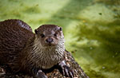
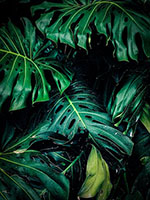

This is a webpage all about me. My likes, dislikes, hopes, dreams, and favorite things.
I am a sophomore in highschool, and am taking various Adobe certification classes. I am the youngest child, with an older sister named Victoria and a mini Schnauzer named Gus.
In my spare time, I like to read and build Lego sets. I also love to travel and hope to visit Europe someday!
"We go to the moon, not because it is easy, but because it is hard." - John F. Kennedy
| Favorite Flower | Peony |  |
|---|---|---|
| Favorite Book | Salt to the Sea by Ruta Sepetys |  |
| Favorite Animal | Otter |  |
| Favorite Place to Visit | Boone, North Carolina | |
| Favorite Color | Emerald Green |  |
| Favorite Season | Winter |  |
Email: ahalka@email.com
Phone: 123-456-7890